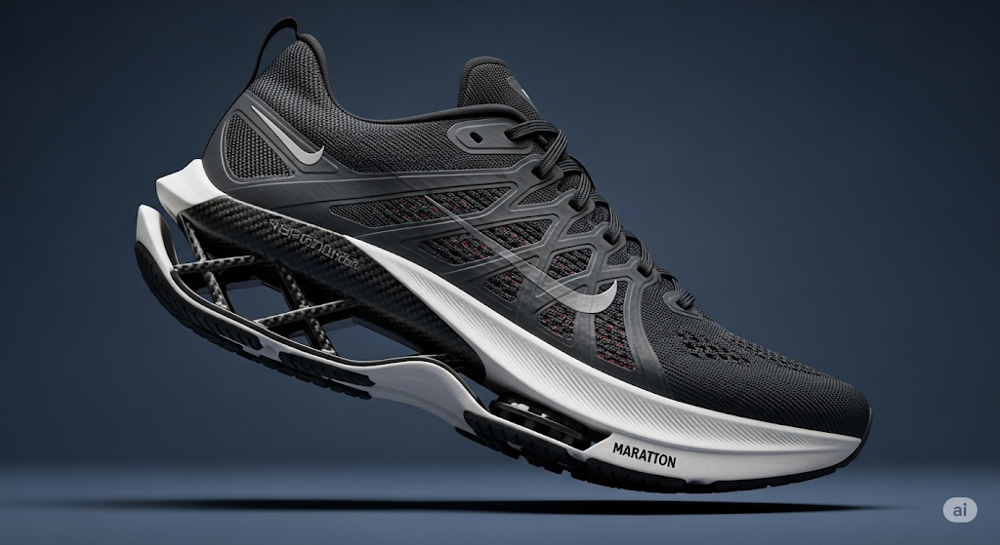
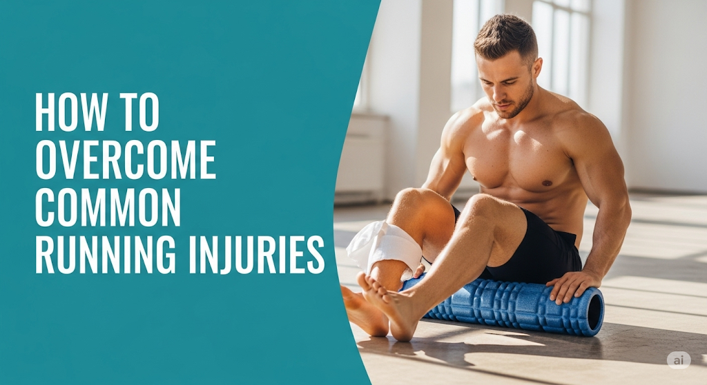

Artikel Seputar Lari
Tips dan trik seputar lari, perawatan sepatu, dan latihan untuk meningkatkan performa Anda.

tips
Cara Memilih Sepatu Lari yang Tepat
Panduan lengkap untuk memilih sepatu lari yang sesuai dengan kebutuhan dan tipe kaki Anda.
Baca Selengkapnya
training
5 Latihan untuk Meningkatkan Performa Lari
Latihan-latihan yang dapat membantu meningkatkan performa lari dan mencegah cedera.
Baca Selengkapnyamaintenance
Tips Merawat Sepatu Lari Agar Tahan Lama
Cara merawat sepatu lari agar tetap nyaman digunakan dan tahan lama.
Baca Selengkapnyatraining
Persiapan Menghadapi Maraton Pertama
Panduan lengkap untuk mempersiapkan diri menghadapi maraton pertama Anda.
Baca Selengkapnya

tips
Mengenal Teknologi Sepatu Lari Modern
Penjelasan tentang berbagai teknologi yang digunakan dalam sepatu lari modern.
Baca Selengkapnya

health
Cara Mengatasi Cedera Umum Saat Lari
Tips dan cara mengatasi cedera umum yang sering dialami oleh pelari, seperti shin splints dan plantar fasciitis.
Baca Selengkapnya